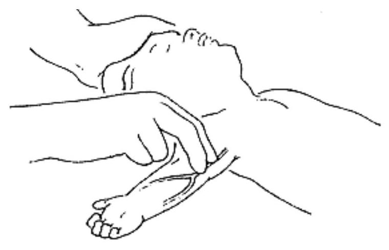

Trauma in Children
Introduction to Pediatric Trauma
- Trauma is the leading cause of death in all children
- Most common surgical problem affecting children
- Proper treatment can prevent death and life-long disability
- Infants and children differ from adults in significant physiological and anatomical ways
- smaller physiological reserves
- increased risk of:
- dehydration
- hypoglycaemia
- hypothermia
Principles of managing paediatric trauma patients are essentially same as for adult:
Airway
Breathing
Circulation
Disability
Exposure of child without losing heat
Managing the Airway in a Child
NO NECK TRAUMA IS SUSPECTED
Child conscious
- Inspect mouth and remove foreign body, if present
- Clear secretions from throat
- Let child assume position of maximal comfort
Child unconscious
- Tilt the head as shown
- Inspect mouth and remove foreign body, if present
- Clear secretions from throat
- Check the airway by looking for chest movements, listening for breath sounds and feeling for breath

MANAGING THE AIRWAY IN A CHILD WITH SUSPECTED NECK TRAUMA
NECK TRAUMA OR POSSIBLE CERVICAL SPINE INJURY IS SUSPECTED
- Stabilize the neck
- Inspect mouth and remove foreign body, if present
- Clear secretions from throat
- Check the airway by looking for chest movements, listening for breath sounds, and feeling for breath
Use jaw thrust without head tilt. Place the 4th and 5th finger behind the angle of the jaw and move it upwards so that the bottom of the jaw is thrust forwards, at 90° to the body.
If the child is still not breathing after carrying out the above, ventilate with bag and mask.
STABILIZE SUSPECTED NECK TRAUMA
If neck trauma is suspected:
- Stabilize the child's neck and keep the child lying on the back
- Tape the child's forehead to the sides of a firm board to secure this position
- Prevent the neck from moving by supporting the child's head (e.g. using litre bags of IV fluid on each side)
- If vomiting, turn on the side, keeping the head in line with the body
LOGROLL IN SUSPECTED NECK TRAUMA
Avoid rotation, extremes of flexion and extension of neck. One person should assume responsibility for neck:
- Stand at top of patient and hold head
- Place fingers at edge of mandible with palm over ears
- Maintain gentle traction to keep neck straight and in line with body
Breathing and Circulation in Children
BREATHING
If child not breathing, ventilate with self-inflating bag and mask. Connect mask to oxygen if available. Must have correct size and position of facemask to prevent leakage.
OROPHARYNGEAL AIRWAYS
Can improve airway opening. Come in different sizes. Appropriate sized airway goes from centre of teeth (incisors) to angle of jaw when laid on face with raised curved (convex) side up. Take particular care in children because of possibility of soft tissue damage.
INSERTION OF OROPHARYNGEAL AIRWAY
- Select appropriate sized airway
- Position child to open airway
- Use tongue depressor, insert airway
- Convex side up in infant
- Concave side up in older child until tip reaches soft palate, then rotate 180° and slide back over tongue
- Recheck airway opening, use different size or reposition if necessary
HOW TO GIVE OXYGEN
Give oxygen through nasal prongs or a nasal catheter.
Nasal Prongs
- Place the prongs just inside the nostrils and secure with tape
Nasal Catheter
- Use an 8 FG size tube
- Measure the distance from the side of the nostril to the inner eyebrow margin with the catheter
- Insert the catheter to this depth
- Secure with tape
Start oxygen flow at 1-2 litres/minute


CIRCULATION
The radial pulse at the wrist should be felt. If strong and not obviously fast, pulse is adequate. If radial pulse is difficult to find, try brachial pulse in middle of upper arm.
Access and Resuscitation
INTRAVENOUS ACCESS IN CHILDREN
- Select suitable vein to place 22 or 24 gauge cannula
- Have assistant keep limb steady, use rubber glove or tubing as tourniquet
- Clean surrounding skin with antiseptic solution
- Introduce cannula into vein and fix securely with tape
- Apply a splint with elbow extended, wrist slightly flexed.
INTRAOSSEOUS ACCESS
- Intraosseous puncture provides quick access to circulation in shocked child if venous cannulation impossible
- Fluids, blood, medicines may be given
- Fluids may need to be given under pressure
- If intraosseous needles unavailable, use spinal or bone marrow biopsy needle
Monitoring and Special Considerations
- Most sensitive indicator of fluid status in a child is urine output.
- Infants are unable to concentrate urine as well as adults, thus more susceptible to electrolyte abnormalities.
- Dosage calculation (based on weight), for fluids, transfusions, drugs is crucial to correct management.
| Infants | 1-2 ml/kg/h |
| Children | 1 ml/kg/h |
| Adults | 0.5 ml/kg/h |
Question: How much urine would you expect a 20 kg child to produce in 24 hours?
- Monitor fluid status, electrolytes, haemoglobin diligently.
- Maintenance fluid requirements must be supplemented to compensate for all losses.
- Tachycardia is an earlier sign than hypotension.
- Events happen quickly in babies; monitor closely.
- Malnutrition can impair response of children to injury, ability to heal and recover. Good nutrition promotes healing - poor nutrition prevents it.
- Avoid hypothermia. Infants and young children, especially those with little subcutaneous fat, are unable to maintain normal body temperature when there are wide variations in ambient temperature or when anaesthetized.
SHOCK RESUSCITATION PROTOCOL IN CHILDREN
| Age/weight | Volume of Ringer's lactate or normal saline solution (20 ml/kg) |
|---|---|
| 2 months (<4 kg) | 75 ml |
| 2-<4 months (4-<6 kg) | 100 ml |
| 4-<12 months (6-<10 kg) | 150 ml |
| 1-<3 years (10-<14 kg) | 250 ml |
| 3-<5 years (14-19 kg) | 350 ml |
Reassess child after appropriate volume has run in.
- Reassess after first infusion: If no improvement, repeat 20 ml/kg as rapidly as possible.
- Reassess after second infusion: If no improvement, repeat 20 ml/kg as rapidly as possible.
- Reassess after third infusion: If no improvement, give blood 20 ml/kg over 30 minutes (if shock is not caused by profuse diarrhoea, in this case repeat Ringer's lactate or normal saline).